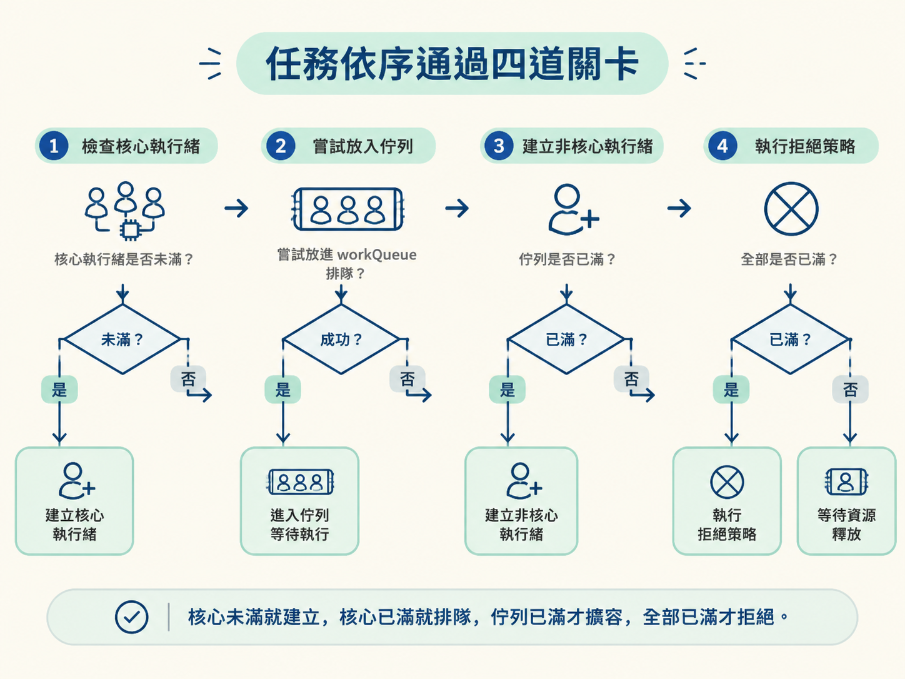
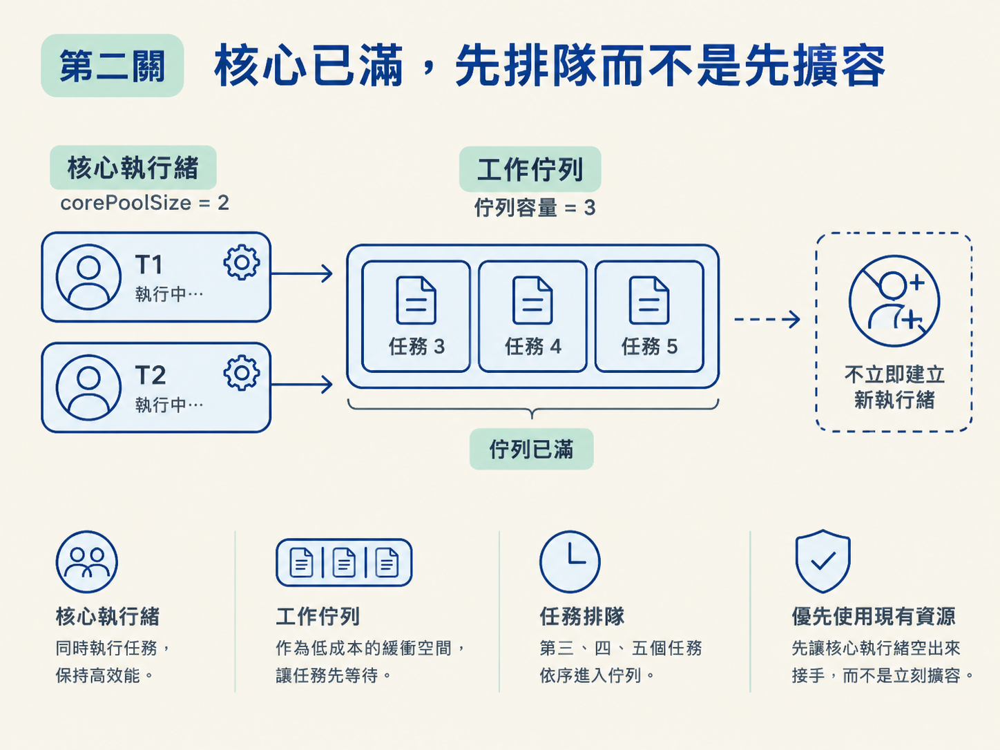
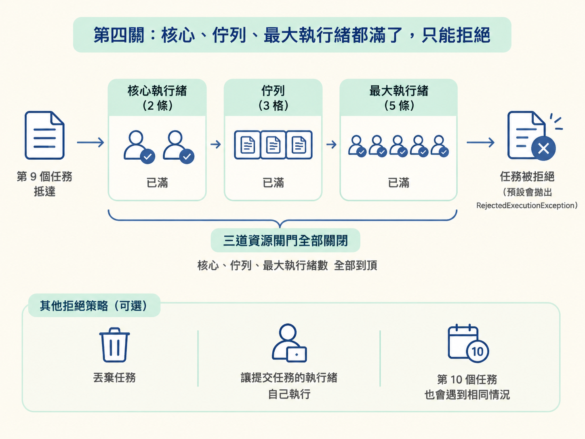
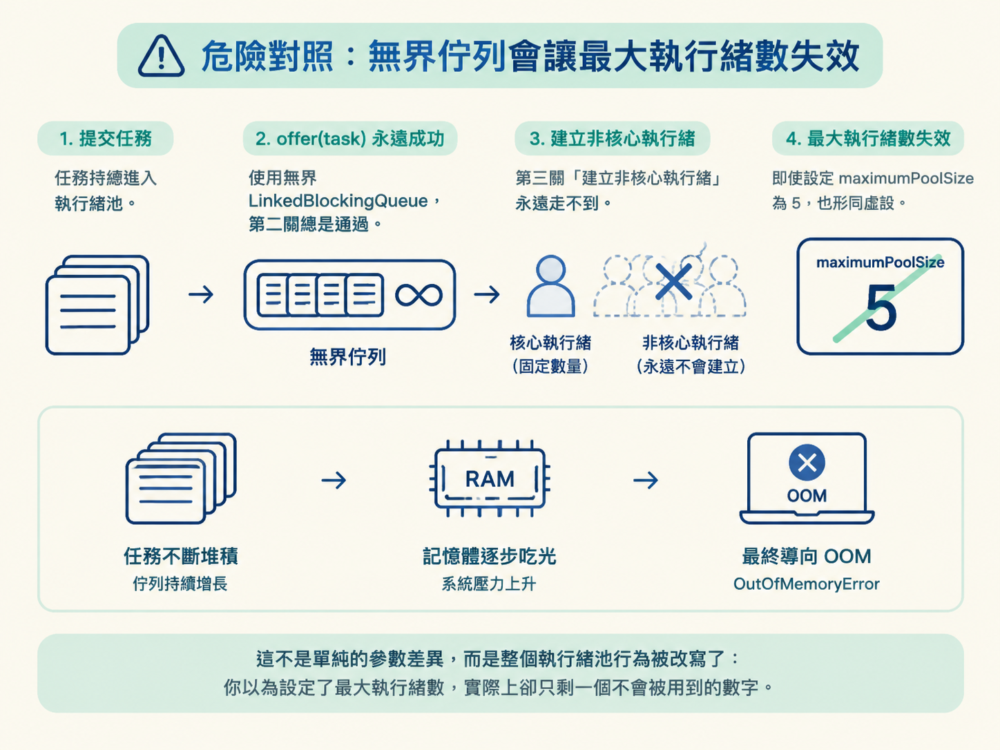

當服務突然湧進大量請求時，執行緒池不會把每個請求都立刻變成一條新執行緒。它會像車站閘門一樣，依序判斷：先由核心執行緒接手，忙不過來就讓任務排隊；佇列也滿了，才臨時增加執行緒；全部資源都用完，最後才拒絕新任務。
如果你能照著這條路徑追蹤，看到一組執行緒池參數時，就能在紙上畫出任務會去哪裡，也能回答一個很常見的面試問題：為什麼核心執行緒滿了，不是立刻擴容，而是先排隊？
這一節是流程演練，不需要先背一大串原理。你只要知道上一節介紹的七個參數各自扮演什麼角色，尤其要分清楚 corePoolSize、workQueue 與 maximumPoolSize：
corePoolSize：核心執行緒數量。workQueue：核心執行緒忙碌時，暫時存放任務的佇列。maximumPoolSize：執行緒池允許存在的最大執行緒數量。接下來會用一組具體參數跑完整個流程。假設所有任務都執行很久，會一直佔住執行緒，讓我們清楚看到執行緒池在壓力下的極限行為。
呼叫 execute(task) 後，執行緒池會按照固定順序判斷，而不是隨機選一種處理方式。順序是：核心執行緒、任務佇列、最大執行緒數，最後才是拒絕策略。
把 JDK 的判斷邏輯簡化成虛擬碼，大致如下：
public void execute(Runnable task) {
if (workerCountOf(c) < corePoolSize) {
addWorker(task, true); // 第一關：還沒滿，直接建核心執行緒
} else if (workQueue.offer(task)) {
// 第二關：核心滿了，先把任務塞進佇列排隊
} else if (workerCountOf(c) < maximumPoolSize) {
addWorker(task, false); // 第三關：佇列滿了，才建非核心執行緒
} else {
reject(task); // 第四關：通通滿了，執行拒絕策略
}
}這段程式碼可以先記成一句話：核心未滿就建立，核心已滿就排隊，佇列已滿才擴容，全部已滿才拒絕。

現在使用這組設定來實際追蹤：
corePoolSize = 2maximumPoolSize = 5workQueue 是容量為 3 的 ArrayBlockingQueue第一個任務進來時，目前執行緒數是 0，小於 corePoolSize 的 2，所以直接建立核心執行緒 T1 來執行。
第二個任務進來時，目前執行緒數是 1，仍然小於 2，因此再建立核心執行緒 T2。到這裡，兩條核心執行緒都在忙碌。
這裡有一個容易答錯的細節：第一關只看「目前執行緒數是否小於核心數」，不會先檢查是否已經有空閒的核心執行緒。只要核心執行緒還沒建滿，即使現有執行緒剛好閒著，新任務仍可能建立新的核心執行緒。這就是 JDK「先把核心執行緒建滿」的實際行為。
第三個任務進來時，目前執行緒數是 2，已經等於 corePoolSize，所以第一關不成立。這時執行緒池不會立刻建立第三條執行緒，而是呼叫 workQueue.offer(task)，把任務放進佇列等待。
第四個和第五個任務也會依序進入佇列。容量為 3 的佇列到這裡剛好填滿。

為什麼不在核心執行緒忙碌時直接擴容？因為佇列本來就是用來吸收短暫的任務堆積。很多時候，核心執行緒只是暫時忙碌，等它們完成手上的工作，佇列裡的任務就能被接走。如果每次核心執行緒一忙就立刻新增執行緒，執行緒數會頻繁增加、銷毀，反而造成額外成本。
因此，先排隊等一下，是用成本較低的緩衝空間，換取執行緒數的穩定。只有佇列也撐不住時，才進入下一關。
第六個任務進來時，核心執行緒已滿，佇列也沒有空間，前兩關都過不了。這時才檢查目前執行緒數是否小於 maximumPoolSize。
目前執行緒數是 2，小於最大值 5，所以建立非核心執行緒 T3，處理剛剛提交的第六個任務。第七個和第八個任務也會照同樣的方式，分別建立 T4 和 T5。此時執行緒總數達到上限 5。
請特別記住：新建立的非核心執行緒，處理的是剛剛提交的新任務，不是回頭把佇列裡較早的任務撈出來執行。
換句話說，擴容是為了先接住眼前的新請求；佇列裡的舊任務，仍然要等某條執行緒完成工作後，才會被逐一消化。
第九個任務進來時，核心執行緒已滿、佇列已滿，執行緒總數也已經達到 maximumPoolSize。三道門都關上了，因此會進入第四關，呼叫 RejectedExecutionHandler.rejectedExecution()。
預設策略是拋出 RejectedExecutionException。也可以改成丟棄任務，或讓提交任務的執行緒自己執行這個任務。第十個任務會遇到相同情況。

至於四種拒絕策略該如何選擇，會在下一節比較。
以下是「核心 2、佇列 3、最大 5」時，前十個任務的流向：
| 任務 | 第一關：核心<2？ | 第二關：入隊？ | 第三關：執行緒<5？ | 結果 |
|---|---|---|---|---|
| 第 1 個 | 是（0<2） | — | — | 建核心執行緒 T1 |
| 第 2 個 | 是（1<2） | — | — | 建核心執行緒 T2 |
| 第 3 個 | 否 | 成功 | — | 進佇列排隊 |
| 第 4、5 個 | 否 | 成功 | — | 進佇列排隊 |
| 第 6、7、8 個 | 否 | 失敗（佇列滿） | 是 | 各建非核心 T3、T4、T5 |
| 第 9、10 個 | 否 | 失敗 | 否（已達 5） | 觸發拒絕策略 |
所以，若真的提交十個任務，結果會是：
你可以把這個順序想成一個漏斗：先用固定容量的核心執行緒，再用佇列吸收波峰，接著用非核心執行緒救急，最後才把超出承載能力的任務擋在外面。
如果把 workQueue 換成沒有指定容量的 LinkedBlockingQueue，情況就完全不同。
無界佇列幾乎永遠不會因為塞滿而讓 offer(task) 失敗。因此，第二關會一直成功，第三關「建立非核心執行緒」就永遠走不到。即使 maximumPoolSize 設定為 5，實際上也不會發揮限制作用。
結果是任務持續堆在佇列裡，記憶體可能被一步步吃光，最後以 OOM 結束。這不是單純的參數差異，而是整個執行緒池行為被改寫了：你以為設定了最大執行緒數，實際上卻只剩一個不會被用到的數字。

因此，佇列容量不是可以隨手填寫的小設定。它會直接決定執行緒池何時擴容、何時拒絕任務，也是後面討論 Executors 快捷執行緒池陷阱的根源。
拿到任意一組 corePoolSize、workQueue 和 maximumPoolSize，你應該能依序回答以下問題：
workQueue。最終要記住的不是某一張表，而是這條固定順序：核心未滿就建立，核心已滿就排隊，佇列已滿才擴容，全部已滿才拒絕。
任務提交後固定走四道關卡：一、核心執行緒未滿就直接建立核心執行緒，即使有閒置核心也照樣可能建立；二、核心滿了就先把任務放進workQueue排隊；三、佇列也滿了，才建立非核心執行緒來處理剛提交的新任務；四、核心、佇列、最大執行緒都滿了，才執行拒絕策略。核心與非核心分開設計，是為了讓執行緒數能隨流量彈性伸縮，同時避免頻繁建立與銷毀。若使用無界佇列，第三關永遠到不了，maximumPoolSize也就失去意義。
當任務走到第四關，就會交給拒絕策略處理。池子真的滿了之後，新任務應該拋錯、丟棄，還是讓提交者自己執行？下一節會比較四種拒絕策略的取捨，也會說明為什麼阿里手冊直接禁止使用 Executors 提供的快捷執行緒池。